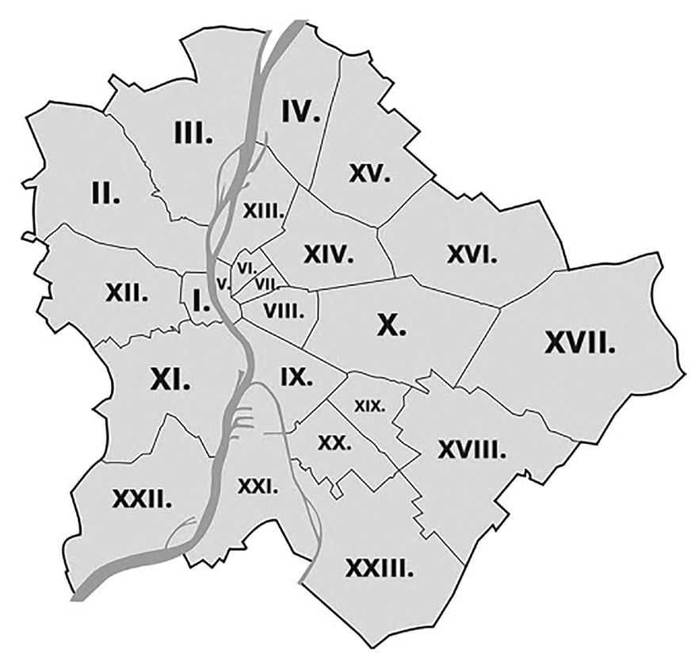

Ez az oldal a Debreceni SZC Mechwart András Gépipari és Informatikai Technikum 9/B osztályának a budapesti kirándulása.
Kirándulás ideje: 2023.05.08-2023.05.09
Tanárok akik mennek: Kissné Simon Mária (osztályfőnök), Hodossiné Sugár Éva (kísérő tanár)(2 fő)
Tanulók akik mennek: Bacskai Levente, Balogh Alexander, Balog Levente, Berecz Mihály, Domonkos Balázs, Füge Martin, Gergely Kristóf Gábor, Jónás Milán Sándor, Jónás Sándor Kornél, Kiss Attila, Kiss Bence, Kiss György Ádám, Kovács Kálmán Csongor, Kovács Zoltán, Lakatos Regina, László Dávid, Mező Marcell, Molnár Ádám, Muhari Milán, Nagy Edvin Norbert, Nagy Gergő, Nagy Imre Sándor, Oláh Balázs, Pál Roland, Rigó Norbert, Simkó János Dávid, Szabó Dávid, Szabó Levente Sándor, Szabó Marcell, Szász Kristóf Bendegúz, Szepesi Richárd Miklós, Szilvási Mátyás, Tóth Gergő, Tóth Zétény, Tóth Zsombor (35 fő)
Budapest: Magyarország fővárosa, egyben legnagyobb és legnépesebb városa, jelenleg az Európai Unió 9. legnépesebb városa. ű Az ország politikai, kulturális, kereskedelmi, ipari és közlekedési központja, emellett Pest vármegye székhelye is, ugyanakkor nem része annak. Pozsonytól 161 km-re délkeletre, Bécstől 214 km-re délkeletre, Prágától 441 km-re délkeletre, Varsótól 545 km-re délnyugatra, Berlintől pedig 688 km-re délkeletre található. Budapest története a keltákig nyúlik vissza az 1. századra, mivel a város eredetileg kelta település volt.
Név eredete: Pestet és Budát, Magyarország fő-, illetve székvárosát csak a reformkortól kezdődően emlegették együtt, közös nevükön. A gyakoribb forma a nagyobb város nevét előre helyezve Pest-Buda volt.
Teljes népesség 1 706 851 fő (2022. jan. 1.)
Népsűrűség 3250,28 fő/km²
Kerületek:
